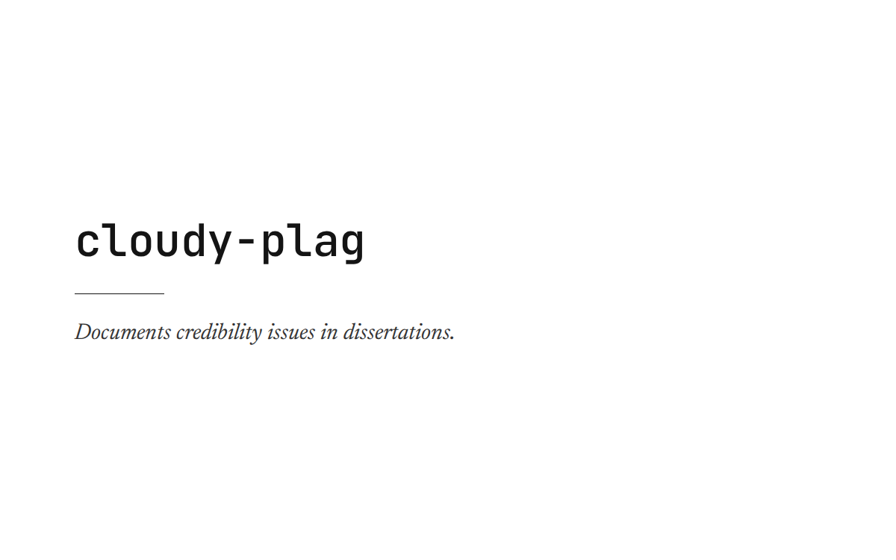

cloudy-plag
A VroniPlag-style wiki that documents — without accusing — credibility issues in public figures' dissertations across plagiarism, originality, and methodological rigor.

- Role
- Concept, design & build
- Stack
- Not available — the source repository could not be fetched for this page
- Status
- ● Offline
What it is
A wiki in the mold of VroniPlag — the German-language project that catalogs plagiarism findings in academic dissertations — applied to public figures' theses. Entries are meant to document specific credibility concerns across plagiarism, originality, and methodological rigor without leveling accusations: the wiki records what a close reading finds, and leaves the judgment to the reader.
Status
Offline at last check, and its source repository wasn't reachable while writing this page, so there's no README or screenshot to draw further detail from. This page is deliberately short rather than padded — everything above is exactly what's stated on the homepage listing. The cover is a typographic card generated from the project's brand tokens, not a screenshot.